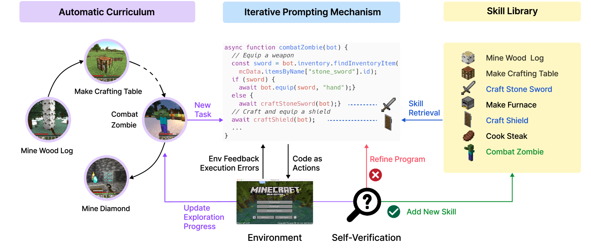
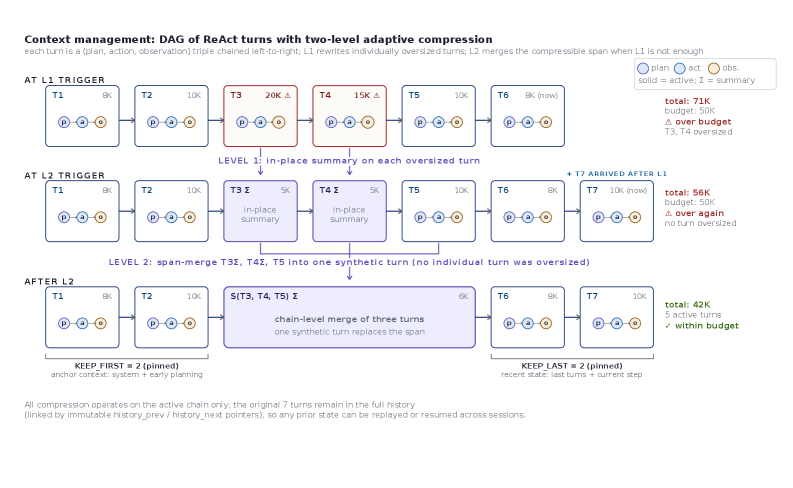

Executive Summary
기억 없는 AI는 매번 같은 자리에서 다시 시작한다. 어제 풀었던 문제도, 어제 만든 절차도, 어제 받은 피드백도 다음 세션이 열리면 흔적 없이 사라진다. 인간이 경험을 쌓아 능력이 되는 방식과 가장 다른 지점이다. 2026년 5월 26일 arXiv에 올라온 한 편의 논문 — MUSE-Autoskill(arXiv:2605.27366, Lin et al., ByteDance Infra AI Lab 추정)은 이 한계를 정면으로 풀려는 시도다. MUSE는 Memory-Utilizing Skill Evolution의 약자이며, 핵심 명제는 짧다 — "스킬을 isolated and static artifacts가 아니라 long-lived, experience-aware, and testable assets로 다룬다." 한 번 쓰고 버리는 일회용 절차가 아니라, 자기 자신의 경험을 누적하며 검증받는 자산. 이 문장 하나가 자기진화 에이전트 연구의 다음 좌표를 그린다.
MUSE는 스킬을 다섯 단계의 unified lifecycle (creation, memory, management, evaluation, and refinement) 안에서 다룬다. 태스크 도중 필요하면 스킬을 만들고(Creation), 호출될 때마다 그 스킬에 경험이 누적되며(Memory — skill-level memory, 학술적으로 새로운 층), 라이브러리를 조직·검색하고(Management), unit test와 runtime feedback으로 이중 검증하고(Evaluation), 그 신호로 갱신한다(Refinement). 같은 해 2월 발표된 SkillsBench(arXiv:2602.12670, 86 tasks × 11 domains × 7,308 trajectories)는 "self-generated Skills provide no benefit on average" — 모델이 스스로 만든 스킬은 평균적으로 도움이 되지 않는다 — 라는 충격적 진단을 내렸다. MUSE는 정확히 그 진단에 대한 처방이다. 생성만으로는 부족하다는 결론에 lifecycle 관리로 답한다. 4개월 사이 SkillsBench가 진단하고, SkillOpt가 단일 스킬 학습으로, MUSE가 lifecycle 관리로 동시에 응답한 구도다.
페블러스는 이 흐름을 Voyager(2023, 학술 원형) → Hermes Agent(2025, 산업 구현) → SkillOpt(2026-05-22, 학습 기법) → MUSE(2026-05-26, lifecycle 관리) 4부작으로 정리해 왔다. 추상화는 매번 한 칸씩 올라간다. "스킬 라이브러리"에서 "스킬 자산의 일생 관리"로. DataClinic이 "데이터를 살아 있는 자산으로 본다"는 명제였다면, 그 명제는 이제 AI-Ready Behavior — 행동 자산을 진단 가능한 상태로 만든다 — 로 자연스럽게 확장된다. 데이터 품질 5신호(레이블·분포·신선도·결측·이상치)는 lifecycle 5단계로 재맵핑되고, 한국 AI 기본법 시행(2026-01-22) 이후의 audit trail 요건은 unit test + runtime feedback + skill-level memory가 만드는 증거 체인과 정확히 맞물린다. 한컴-LG ChatEXAONE 전략 협약(2026-05-22)이 한국 첫 SkillOps 의제화의 출발점이라면, 그 닷새 후 발행되는 이 글은 "행동 자산의 진단" 카테고리를 한국어로 처음 선언하는 자산이 된다.
MUSE-Autoskill 프레임의 핵심 좌표와 주변 정량 신호를 한눈에 본다. 출처: arXiv:2605.27366·arXiv:2602.12670, McKinsey State of AI 2026, LangChain State of AI Agents 2025(n=1,340), Mem0.ai.
5단계
스킬 lifecycle
생성·기억·관리·평가·정제
88% / 64%
파일럿 실패
McKinsey — 64%가 평가 부재
31% → 79%
작업 완료율
LangChain — 비용 −62%
+16.2pp
큐레이션 효과
SkillsBench — self-gen ≒ 0
기억 없는 AI의 한계
AI 에이전트와 한 시간 동안 깊이 있는 대화를 나누어 본 사람이라면 누구나 한 번쯤 느꼈을 것이다 — "내일이면 이 대화를 전혀 기억하지 못하겠지." 어제 사용자가 알려준 회사 규칙, 어제 함께 발견한 풀이 절차, 어제 받은 미묘한 피드백 — 다음 세션이 열리는 순간 모든 흔적이 깨끗하게 지워진다. 사람이라면 단 한 번의 실수에서도 배우는데, AI는 같은 자리에서 같은 실수를 백 번이라도 반복한다.
2025년에는 이 한계를 "메모리 기능"으로 부분적으로 봉합하려는 시도가 빅테크 전반에서 가시화되었다. ChatGPT memory, Anthropic Memory, Google Gemini 개인화 — 모두 사용자/세션 단위에서 누적되는 메모리다. 그러나 깊이 들여다보면 한 가지 공통점이 보인다. 지금까지의 메모리는 "누가 대화하고 있는가"의 단위로만 작동한다. 사용자 단위, 세션 단위, 잘해야 에이전트 단위. "어떤 일을 하는가" — 스킬 그 자체가 자신의 경험을 갖는다는 발상은 학술적으로도 산업적으로도 비어 있는 자리였다.
페블러스는 닷새 전 Microsoft SkillOpt 논문을 다루면서 "스킬 문서를 학습 가능한 텍스트 자산으로 다룬다"는 명제를 소개했다. SkillOpt가 풀어낸 질문이 "한 개의 스킬을 어떻게 학습시킬 것인가"였다면, 그 다음 질문은 자연스럽게 따라온다 — 학습된 스킬을 어떻게 기억하고, 누적하고, 검증하고, 갱신할 것인가. 한 번 잘 만들어진 절차가 매 호출마다 어제의 자신을 잊는다면, 그것은 학습되었다고 말할 수 있는가.
시장의 정량 신호도 이 질문이 막연한 추상이 아님을 보여준다. McKinsey의 State of AI 2026에 따르면 에이전트 파일럿 프로젝트의 88%가 production 도달에 실패했고, 실패 기업의 64%가 그 원인으로 "evaluation gap"을 꼽았다. LangChain의 2025년 말 설문(n=1,340)은 layered memory를 도입한 조직에서 task completion이 31%에서 79%로 뛰었고 비용은 62% 줄었다고 보고한다. 기억 없는 에이전트는 그저 답답한 정도가 아니라 운영 단계에서 무너진다는 현장 데이터.
이 보고서는 그 빈자리를 처음 학술적으로 메우려는 시도 — MUSE-Autoskill — 을 해부한다. 무엇을 제안하는지, 어떻게 작동하는지, 그리고 무엇보다 — 데이터 진단을 해온 회사가 이 흐름을 어떻게 받아 안는가. AI-Ready Data에서 AI-Ready Behavior로 명제가 한 칸 확장되는 자리.
한 프레임이 제안하는 것 — 5단계 lifecycle
MUSE-Autoskill(arXiv:2605.27366, Lin · Li · Song · Jiang · Zhang, 2026-05-26)의 핵심 명제는 abstract 첫 줄에 또렷이 박혀 있다.
"Existing skill creation approaches treat skills as isolated and static artifacts, limiting their reusability, reliability, and long-term improvement."
— MUSE-Autoskill abstract (arXiv:2605.27366)
한 줄로 옮기면 이렇다 — 지금까지의 스킬은 한 번 만들어 두면 그 자리에 박힌 채로 늙어 간다. Voyager가 만든 스킬 라이브러리도, Hermes가 5+ tool call 후에 자동으로 적어 둔 절차 문서도, SkillOpt가 텍스트 공간에서 다듬어 낸 best_skill.md도 — 일단 결정되고 나면 자기 자신의 경험을 누적하지 못했다. 같은 스킬이 100번 호출되어도 그 100번의 경험은 어디에도 남지 않는다. MUSE의 답은 다섯 단계의 통합 lifecycle이다.
"We propose MUSE-Autoskill Agent (Memory-Utilizing Skill Evolution), a skill-centric agent framework that manages skills through a unified lifecycle (creation, memory, management, evaluation, and refinement), highlighting the importance of treating skills as long-lived, experience-aware, and testable assets."
— MUSE-Autoskill abstract
다섯 단계가 모두 처음 등장한 단계는 아니다. Creation은 Voyager가, Memory는 MemGPT가, Management는 산업 AgentOps 도구들이, Evaluation은 Reflexion이, Refinement는 GEPA가 부분적으로 다뤘다. 다섯을 하나의 통합 lifecycle로 묶어 "스킬이라는 자산"의 일생을 처음으로 그린 작업이 MUSE다. 단계별로 따로 일하던 흐름을 하나의 운영 모델로 묶었다는 점이 학술적 새로움이다.
다섯 단계를 한 줄로 늘여 놓으면 그 안에 한 자산의 일생이 들어 있다. 태어나고(Creation), 경험을 누적하고(Memory), 도서관 안에서 정돈되고(Management), 검진을 받고(Evaluation), 필요할 때 갱신된다(Refinement). 사람이 한 직업을 평생 키워 가는 흐름과 닮았다 — 처음 배우고, 일하면서 익숙해지고, 동료들과 나누고, 평가받고, 더 나은 버전으로 다시 자란다. MUSE 논문은 이 다섯 단계를 하나의 그림으로 정리해 두었다.

다음 카드들은 이 다섯 단계가 한 스킬 안에서 어떻게 맞물려 돌아가는지를 한눈에 보여준다.
① Creation
태스크 도중 재사용 가능한 절차를 발견하면 on-demand로 스킬 문서로 결정한다. 사람의 결정이 아니라 에이전트 자신의 판단으로 "이 절차는 자산화할 가치가 있다"를 분류한다.
② Memory
스킬 단위로 경험을 누적한다 — skill-level memory. 호출될 때마다 성공·실패 신호, 변형 패턴, 도메인 컨텍스트가 그 스킬 자체에 쌓인다.
③ Management
스킬 라이브러리를 조직·검색·중복 제거한다. 비슷한 스킬이 여럿 만들어지면 통합하고, 쓰이지 않는 스킬은 자연 도태시킨다.
④ Evaluation
unit test(정적) + runtime feedback(동적) 이중 검증. 함수가 단위 테스트를 통과하듯 스킬도 통과해야 하며, 운영 중 발견되는 신호도 함께 평가에 들어간다.
⑤ Refinement
평가 신호를 받아 스킬 본문·메모리·메타데이터를 갱신한다. 한 번 만들고 끝나는 게 아니라 evaluation → refinement → 다시 memory에 누적되는 폐쇄 루프가 lifecycle의 심장.
이 lifecycle이 왜 지금 필요해졌는가. MUSE 논문이 발표되기 정확히 3개월 전(2026-02-13), 또 다른 한 편의 논문이 자기진화 에이전트 연구에 충격을 던졌다. SkillsBench(arXiv:2602.12670, Li et al.) — 86 tasks × 11 domains × 7,308 trajectories 규모의 첫 본격 벤치마크. 그 결정적 한 줄은 이렇다.
"Self-generated Skills provide no benefit on average, showing that models cannot reliably author the procedural knowledge they benefit from consuming."
— SkillsBench abstract (arXiv:2602.12670)
해석하면 — 모델이 스스로 만든 스킬을 다시 자신에게 먹였을 때 평균적으로는 도움이 되지 않았다. 같은 논문은 사람이 큐레이션한 스킬은 평균 +16.2pp 향상(도메인별 +4.5~+51.9pp 편차)을 보고했고, 84개 task 중 16개는 자가 생성 스킬을 먹였을 때 오히려 점수가 더 떨어졌다고 했다. "생성만으로는 안 된다"는 진단. 그리고 정확히 3개월 뒤, 같은 SkillsBench를 평가 도구로 사용한 MUSE 논문이 lifecycle 처방으로 답했다. SkillsBench가 진단했고, MUSE가 처방했다.
한 가지 주의가 필요하다. SkillsBench는 MUSE 팀이 만든 벤치마크가 아니다. 별개 연구진(Li et al.)의 독립 작업이며, MUSE는 이를 평가 도구로 채택했을 뿐. 또한 MUSE 자체의 SkillsBench 점수는 v1 단계에서 "initial evidence that lifecycle-managed skills can improve task success, efficiency, reuse, and cross-agent transfer"로만 표기되어 있다. 정확한 baseline 비교 수치는 아직 공개되지 않았다. 본 보고서는 MUSE의 정량 단정을 피하고, lifecycle 프레임 자체의 통합력에 가치를 둔다.
Creation — 스킬은 어떻게 태어나는가
스킬은 어떻게 결정되는가. MUSE의 Creation 단계는 학술적으로 갑자기 출현한 발상이 아니다. 페블러스가 정리해 온 시리즈를 따라가면 그 계보가 또렷하다.
3.1Voyager — 스킬 라이브러리의 원형
2023년 NVIDIA · Caltech 연구진이 발표한 Voyager(arXiv:2305.16291)는 GPT-4 위에 ever-growing skill library를 처음으로 구현했다. Minecraft 환경에서 에이전트가 자율적으로 도구를 만들고, 그 도구를 라이브러리에 등록하고, 다음 태스크에서 그것을 재사용했다. 스킬을 자산으로 다룬다는 발상의 학술 원형. 다만 Voyager의 스킬 관리는 "추가"에 머물렀다. 한 번 등록된 스킬은 갱신·평가·도태의 절차 없이 라이브러리에 쌓일 뿐이었다.

3.2Hermes Agent — 산업 구현체의 등장
2025년 4월 NousResearch가 공개한 Hermes Agent는 Voyager의 학술 직관을 산업 코드로 옮겼다. 사용자와 5번 이상 도구 호출이 일어난 작업을 자동 감지해 스킬 문서로 적어 두는 메커니즘 — "사용자와 함께 자라는 에이전트"의 첫 산업 구현체. 다만 Hermes 역시 스킬을 한 번 적은 뒤 그 스킬의 운영 데이터를 체계적으로 다시 학습 신호로 흡수하는 폐쇄 루프는 갖추지 않았다.
3.3MUSE의 Creation — unit test가 동반된다
MUSE의 Creation은 한 가지 결정적 차이가 있다. 스킬이 만들어지는 그 순간부터 unit test가 동반된다. 함수 코드를 짜면서 동시에 테스트를 짜는 TDD(Test-Driven Development)의 발상이 스킬 단위로 이식된 셈이다. 자가 생성된 스킬이 평균적으로 도움이 되지 않았다는 SkillsBench의 진단은, 검증되지 않은 채로 라이브러리에 풀려난 스킬이 노이즈로 작용한 결과로 읽을 수 있다. MUSE는 Creation 시점에서 검증 게이트를 끼워 넣어 그 노이즈를 원천에서 줄이려 한다.
스킬은 어떻게 태어나는가 — Voyager가 "라이브러리에 등록한다"고 답했다면, Hermes는 "5번의 반복을 감지한다"고 답했고, MUSE는 "검증을 동반한 채로 lifecycle에 진입한다"고 답한다. 같은 질문에 매번 한 칸씩 정교해진 답.
Creation은 외로운 사건이 아니다. MUSE에서 스킬이 만들어지는 순간은, 같은 스킬이 앞으로 살아갈 lifecycle 전체의 첫 호흡이다. 한 번 만들어진 뒤 누군가 들춰보지 않으면 잊히는 게 아니라, Memory가 호흡을 이어 받고, Evaluation이 건강을 검진하고, Refinement가 영양을 공급한다. 자산이라는 단어는 그렇게 쓰여야 한다.
Memory — 스킬도 경험을 누적한다
MUSE의 가장 큰 학술적 새로움은 Memory 단계에 있다. abstract의 한 줄이 이를 정확히 드러낸다.
"Skill-level memory that accumulates experience for each skill across tasks, enabling more effective reuse and adaptation over time."
— MUSE-Autoskill abstract
지금까지의 에이전트 메모리 연구는 두 개의 단위로 발전해 왔다. 세션/사용자 단위(MemGPT 2023, ChatGPT memory 2024, Anthropic Memory 2025)와 에이전트 단위(Generative Agents 2023, Reflexion 2023). 세션 메모리는 "내가 누구와 대화했는가"를, 에이전트 메모리는 "이 에이전트가 무엇을 겪었는가"를 기억한다. MUSE는 여기에 세 번째 층 — 스킬 단위 메모리 — 를 명시적으로 도입한다.
세 층의 차이를 표로 정리하면 의미가 또렷해진다.
| 메모리 단위 | 대표 연구 | 기억하는 것 | 한계 |
|---|---|---|---|
| 세션 / 사용자 | MemGPT(2023), ChatGPT memory(2024) | 한 사람과의 대화 이력 | 스킬을 바꿔도 사용자만 같으면 같은 메모리 |
| 에이전트 | Generative Agents(2023), Reflexion(2023) | 에이전트 자신의 경험 stream | 동일 에이전트의 모든 활동이 한 메모리에 섞임 |
| 스킬 | MUSE(2026) | 한 스킬의 호출 경험 — 성공·실패·변형 패턴 | 새로운 운영 차원 등장 (이번 글의 주제) |
출처: 합성 — MemGPT(arXiv:2310.08560), Generative Agents(arXiv:2304.03442), Reflexion(arXiv:2303.11366), MUSE-Autoskill(arXiv:2605.27366).
이 발상을 가장 직관적으로 설명하는 비유는 객체지향 프로그래밍의 instance/class 분리다. class는 메소드를 정의하지만, 그 메소드가 어떤 instance에서 어떻게 호출되었는지는 따로 기록되지 않는다. 그러나 만약 메소드 자신이 "내가 몇 번 호출되었는가, 그 중 몇 번이 성공했는가, 어떤 인자 패턴에서 자주 실패했는가"를 기억한다면 — 그것이 바로 MUSE가 말하는 skill-level memory다. 메소드가 instance처럼 자기 자신의 호출 이력을 갖는 새 차원.
4.1cross-task transfer — 같은 스킬, 다른 태스크
skill-level memory의 한 가지 결정적 효과는 cross-task transfer다. 같은 사용자가 다른 태스크를 시켰을 때, 또는 다른 사용자가 같은 종류의 태스크를 시켰을 때, 스킬은 이전 호출들에서 누적된 경험을 그대로 들고 가서 작동한다. 사용자가 누구든·태스크가 무엇이든 그 스킬이 만난 모든 경험이 다음 호출에 같이 따라가는 구조. 데이터의 가치가 행동의 가치로 옮겨가는 통로가 여기서 처음 명시화된다.
4.2LangChain의 layered memory 효과 — 정량 근거
skill-level memory의 정량 가치를 직접 보여주는 학술 데이터는 아직 v1 단계라 비어 있지만, 인접 산업 데이터는 강한 신호를 준다. LangChain의 2025년 말 설문(n=1,340)은 layered memory(세션·에이전트 메모리의 통합 운영)를 도입한 조직에서 task completion이 31%에서 79%로 뛰었고, 비용은 62% 줄었다고 보고했다. 단일 층 메모리에서 다층 메모리로 옮기는 것만으로 production 성과가 두 배 가까이 오른 셈이다. MUSE의 skill-level memory는 그 위에 세 번째 층을 더한 것이고, 정량 효과는 동등하거나 더 클 것이라는 추정이 자연스럽다.
MUSE 논문은 한 스킬 안에 무엇이 누적되는지를 구체적인 SKILL.md 분해도로 보여준다. SKILL.md 본문(median 326줄), 보조 스크립트(9%), unit test(9%), references(0%) — 한 스킬이 어떤 구성요소들로 자산화되는지의 정량 단면.

"한 스킬이 100번 호출되면, 그 100번의 경험은 어디에 사는가." MUSE가 답하기 전에는 어디에도 살지 않았다. 사용자 메모리에 흘러갔다가 세션 종료와 함께 흩어졌고, 에이전트 메모리에는 다른 모든 활동과 섞여 정체성을 잃었다. MUSE 이후, 그 100번은 스킬 자신에게 사는 자산이 된다. 데이터가 살아 있는 자산이라는 명제가, 행동에도 그대로 옮겨붙은 순간.
Evaluation + Refinement — 검증된 스킬만 살아남는다
SkillsBench가 진단한 문제 — "self-generated Skills provide no benefit on average" — 의 핵심은 검증 없이 만들어진 스킬에 있다. MUSE의 Evaluation 단계는 정확히 이 진단의 처방이다.
"We evaluate them through unit tests and runtime feedback for continuous refinement."
— MUSE-Autoskill abstract
검증의 이중성이 핵심이다. unit test는 정적(static)이고, runtime feedback은 동적(dynamic)이다. 둘은 서로 다른 종류의 결함을 잡는다.
5.1unit test — 스킬 단위 TDD
함수가 코드 리뷰에서 단위 테스트를 통과해야 하듯, 스킬도 라이브러리에 들어가기 전에 명시된 입력·출력·예외 동작에 대해 통과해야 한다. SoftWare engineering의 50년 누적이 이 자리에서 스킬 단위 검증으로 이식된다. 사람이 짜야 하는 절차였던 unit test가 이제는 옵티마이저 모델이 함께 생성하고 검증하는 자동화된 게이트가 된다.
5.2runtime feedback — 운영 중 발견되는 결함
그러나 unit test가 모든 것을 잡지는 못한다. 분포가 미묘하게 다른 입력, 도구 환경의 사소한 변화, 시간이 흐르며 누적되는 의미적 표류 — 이런 결함은 운영 중에만 드러난다. Reflexion(2023)이 처음 제안한 verbal feedback 메커니즘이 MUSE의 두 번째 검증 축으로 들어와, 운영 중 발견되는 실패·이상 패턴을 자가 비판으로 잡아낸다. 정적 게이트가 막지 못한 동적 결함을 동적 게이트가 잡는 이중 안전망.
5.3Refinement — 검증 신호의 폐쇄 루프
Evaluation 신호가 모이면 Refinement가 작동한다. unit test에서 잡힌 구조적 결함은 스킬 본문 수정으로, runtime feedback에서 잡힌 의미적 결함은 메모리·메타데이터 갱신으로 흡수된다. 그리고 갱신된 스킬은 다시 Memory에 누적되어 다음 호출의 시작점이 된다. Creation → Memory → Management → Evaluation → Refinement → Memory의 폐쇄 루프. 한 번 만들고 끝나는 게 아니라 lifecycle 그 자체가 학습의 주체가 되는 구조.
MUSE 논문 자체도 이 검증 + Refinement 결합의 효과를 한 그림에 응축해 두었다. 보상(품질)을 그대로 유지하면서 latency와 tokens가 줄어드는 — lifecycle 관리된 스킬은 더 싸고 더 빠르고 더 정확하다는 결과의 산점도.

왜 지금 이 lifecycle이 산업적으로 절실해졌는가. 한 개의 정량 신호가 그 절실함을 가장 또렷이 보여준다. 다음 세 개의 숫자는 따로 떨어진 통계가 아니라 한 그림을 그린다 — 현장은 무너지고 있고, 무너지는 이유의 절반 이상이 평가의 부재이며, lifecycle 한 층만 더해도 두 배 가까이 회복된다. McKinsey가 진단하고, LangChain이 응답한다.
88%
파일럿 실패
McKinsey: 에이전트 PoC → production 도달 실패
64%
evaluation gap
실패 기업이 꼽은 1순위 원인
+48pp
layered memory 효과
LangChain: task completion 31% → 79%, 비용 −62%
McKinsey의 88%·64%는 단순히 평균값이 아니다. 현장의 거의 모든 파일럿이 무너지고 있고, 그 중 절반 이상이 "평가 시스템이 없어서" 무너진다는 신호다. SkillOpt가 텍스트 공간 학습으로 +23.5pt를 만든 결과 위에, MUSE의 lifecycle 평가가 그 84%의 진입로를 열어준다면 — 산업적 의의는 학술 점수 한두 자릿수 향상보다 훨씬 크다.
한국 AI 기본법(2026-01-22 시행)과의 정확한 매칭. 이 법은 고영향 AI 영향평가에 "운영 중 위험 탐지·차단·전환 체계의 존재 여부"를 포함하라고 명시한다. MUSE의 Evaluation(unit test + runtime feedback) + Skill-level Memory + Refinement가 형성하는 lifecycle 데이터는 정확히 그 audit trail의 기술적 증거 체인이 된다. 컴플라이언스 부담이 lifecycle overhead로 자연 흡수되는 자리.
Voyager → Hermes → SkillOpt → MUSE — 4부작이 그린 좌표
페블러스의 자기진화 에이전트 시리즈는 처음부터 한 가지 가정을 따라왔다 — 학술의 직관이 산업으로 흐르고, 산업의 구현이 다시 학술의 정교화로 돌아온다. Voyager부터 MUSE까지 4년 사이의 좌표가 그 가정을 정확히 보여준다.
| 시기 | 작업 | 위상 | 새로움 |
|---|---|---|---|
| 2023-05 | Voyager (NVIDIA·Caltech) | 학술 원형 | ever-growing skill library — 스킬이 "자산"이라는 발상 |
| 2025-04 | Hermes Agent (NousResearch) | 산업 구현 | 5+ tool call 자동 감지 → 스킬 자동 작성 |
| 2026-05-22 | SkillOpt (Microsoft) | 학습 기법 | 텍스트 공간 gradient descent — 단일 스킬 학습 +23.5pt |
| 2026-05-26 | MUSE-Autoskill (ByteDance 추정) | lifecycle 관리 | 5단계 통합 lifecycle + skill-level memory |
| 2026-05-27 | 페블러스 발행 | 한국어 카테고리화 | AI-Ready Data → AI-Ready Behavior · SkillClinic 선언 |
출처: 합성 — 각 논문 arXiv, NousResearch Hermes Agent v0.10.0, Microsoft SkillOpt project page, ByteDance Infra AI Lab 추정.
시리즈를 통과해서 보면 추상화가 매번 한 칸씩 올라간다. Voyager는 "스킬이라는 객체가 존재한다"는 발상의 학술 원형이었다. Hermes는 그 객체를 "산업 코드 안에서 어떻게 자동 생성하는가"를 보였다. SkillOpt는 그 객체를 "어떻게 학습 가능한 상태로 다루는가"를 풀었다. MUSE는 마침내 그 객체를 "어떻게 살아 있는 자산으로 관리하는가"를 묻는다. 단일 스킬에서 스킬 도서관 전체로, 학습 기법에서 lifecycle 거버넌스로 — 다섯 해 사이의 사고가 단계적으로 깊어졌다.
6.1AgentOps → SkillOps → MemoryOps — 카테고리 진화
IT 산업은 운영(operations) 카테고리를 통해 새로운 기술 패러다임을 흡수해 왔다. DevOps(2007), MLOps(2017), LLMOps(2023). 그리고 2024년 무렵부터 AgentOps가 안정화 단계에 진입했다 — Mem0(GitHub 48,000+ stars, Series A $24M, AWS Agent SDK 독점), Letta, Zep, LangMem 4강 체제. Anthropic의 Agent Skills Open Standard(2025-12)가 Claude·OpenAI Codex·Gemini CLI에 동시 채택된 것은 이 흐름의 결정적 시그널이었다.

그 위에 2026년 봄부터 새로운 sub-segment가 모습을 드러내고 있다 — SkillOps. SkillOpt와 MUSE가 학술 청사진을 그렸고, 산업 도구는 아직 표준화되지 않았다. 그리고 그 옆에는 더 큰 빈자리 — MemoryOps — 가 있다. skill-level memory가 본격화되면 메모리 그 자체의 lifecycle 관리(생성·진단·삭제·전이)가 별도 카테고리로 떨어져 나올 가능성이 크다.
| 시기 | 카테고리 | 대표 도구·표준 |
|---|---|---|
| 2007 | DevOps | Jenkins, Git, Docker, Kubernetes |
| 2017 | MLOps | MLflow, Kubeflow, SageMaker |
| 2023 | LLMOps | LangSmith, Langfuse, Weights & Biases |
| 2024 | AgentOps | Mem0, Letta, Zep, LangMem · Agent Skills Open Standard |
| 2026~ | SkillOps | SkillOpt, MUSE-Autoskill (학술 청사진), 표준 도구 미정착 |
| 미정착 | MemoryOps | skill-level memory가 본격화되면 분기 예상 |
출처: 합성 — 각 카테고리의 산업 표준화 시점, Mem0.ai blog, Anthropic Agent Skills Open Standard(2025-12).
6.2빅테크 메모리 전쟁
2026년 봄은 메모리·스킬 전선에서 빅테크가 동시에 자기 깃발을 꽂은 시기였다. Anthropic의 Dreaming(2026-05-06, VentureBeat 보도)은 에이전트가 자신의 실수에서 학습하는 시스템을 제안했고, Microsoft의 SkillOpt는 단일 스킬 학습으로 +23.5pt를 만들었다. Meta의 HyperAgent와 Google의 Astra도 같은 시기에 메모리·도구 사용 통합을 가속화했다. MUSE의 ByteDance Infra AI Lab 추정 출처는 이 전선에 동방 기술기업도 학술적으로 참여하기 시작했음을 시사한다.
6.3혼동 주의 — 동명 인접 사례
한 가지 사실관계를 정리하고 넘어가자. 본 보고서가 다루는 MUSE-Autoskill(arXiv:2605.27366, Lin et al., 2026-05-26)과는 별개로, 비슷한 시기에 발표된 동명의 다른 프레임워크가 존재한다 — "Learning on the Job"(arXiv:2510.08002, Cheng Yang et al., 5기관 공동, 2025-10-09, GitHub KnowledgeXLab/MUSE). 같은 약자 "MUSE"를 쓰지만 저자·소속·접근이 다른 별개 연구다. 본 보고서는 사용자 link verbatim 검증을 거친 arXiv:2605.27366을 1차 출처로 명시한다.
행동 자산을 진단할 시간 — 페블러스 관점
페블러스는 지난 몇 해 동안 한 가지 명제를 따라 움직였다 — "데이터를 진단 가능한 상태로 만든다." DataClinic이 학습 데이터의 다섯 신호를 진단했고, AI-Ready Data가 그 진단의 출력 카테고리였으며, DataGreenhouse와 PebbloSim이 진단된 데이터의 운영 환경을 제공해 왔다. MUSE-Autoskill이 던진 명제는 이 흐름의 자연스러운 다음 단계다 — 행동(behavior) 자산도 진단 가능한 상태로 만들 수 있는가.
7.1AI-Ready Data → AI-Ready Behavior
명제는 한 칸 확장된다. AI 학습용 데이터의 품질을 진단해 온 회사가, AI 에이전트의 행동 자산 품질을 진단하는 회사로 자연스럽게 옮겨간다. SkillOpt가 "스킬 문서를 학습 가능한 텍스트 자산으로 다룬다"를 보였다면, MUSE는 "그 텍스트 자산이 lifecycle을 가진 long-lived asset"임을 선언한다. 두 명제가 모이는 자리에 페블러스의 다음 카테고리가 있다 — AI-Ready Behavior. 데이터 진단의 명제를 행동 차원으로 확장한 명제.
7.2DataClinic 5신호 → SkillClinic 5신호 재맵핑
페블러스 DataClinic은 학습 데이터를 다섯 가지 신호로 진단해 왔다 — 레이블 무결성, 분포 균형, 신선도, 결측, 이상치. 이 다섯 신호는 lifecycle 5단계로 1:1 재맵핑된다. 같은 진단 철학이 데이터에서 행동으로 옮겨붙는 자리.
| DataClinic 5신호 (데이터) | → | SkillClinic 5신호 (행동 자산) | 매핑 의미 |
|---|---|---|---|
| 레이블 무결성 | → | Creation 결함 진단 | 잘못 결정된 스킬, 잘못된 절차로 굳은 자산 |
| 분포 균형 | → | Memory 누적 균형 | 한 스킬의 경험이 한 도메인·한 패턴에 편향되었는가 |
| 신선도 | → | lifecycle 회전율 | 1년째 갱신되지 않은 스킬, 한 번 만들고 잊힌 자산 |
| 결측 | → | 검증 게이트 누락 | unit test 없이 배포된 스킬, runtime feedback이 끊긴 스킬 |
| 이상치 | → | Refinement 트리거 | runtime feedback이 갑자기 악화된 스킬, anomalous 호출 패턴 |
출처: 페블러스 DataClinic 5신호 → MUSE-Autoskill lifecycle 5단계 1:1 재맵핑(본 보고서 자체 합성). 한국어로 정의된 첫 매핑.
이 매핑은 페블러스의 한국어 자산이다. 영어권에서도 아직 DataClinic 5신호와 lifecycle 5단계의 1:1 매핑을 시도한 작업은 보이지 않는다. "행동 자산을 진단 가능한 상태로 본다"는 명제가 한국어 카테고리로 처음 선언되는 자리.
7.3고객/파트너 실무 함의 — 네 가지 질문
MUSE의 lifecycle 관리는 매력적이지만 동시에 "스킬 자산을 누가 어떻게 관리할 것인가"라는 새로운 운영 부담을 등장시킨다. 고객/파트너 실무자가 자연스럽게 묻게 되는 질문은 명확하다.
- • 우리 회사의 스킬 라이브러리에서 살아 있는 스킬·죽은 스킬·중복 스킬은 각각 몇 개인가?
- • 한 스킬에 누적된 경험 메모리는 신뢰할 만한가? 잘못된 누적이 잠복해 있지는 않은가?
- • unit test가 통과해도 잡지 못하는 구조적 결함은 어떻게 진단하는가?
- • 한국 AI 기본법 audit trail 요건을 lifecycle 데이터로 어떻게 충족시킬 것인가?
이 모든 질문은 데이터 진단 회사의 일이다. 페블러스가 "행동 자산의 가시화·진단·관리" 도구를 한국어 환경에 맞춰 제공할 수 있다면, MLOps 너머 AgentOps · SkillOps 시장의 자연스러운 진입로가 된다.
7.4한국 동시일 — 5월 22일과 5월 27일 사이
한국 시장의 정량 좌표도 이 흐름을 받쳐 준다. 한국 AI 시장은 IITP 기준 2025년 3.44조원 → 2027년 4.46조원(CAGR 14.3%)으로 향하고 있다. 같은 봄, 결정적인 한 주가 한국 AI 산업에 펼쳐졌다.
아래 timeline은 단순 연표가 아니다. 규제(AI 기본법)가 audit trail의 문법을 먼저 깔았고, 산업(한컴·LG 협약)이 같은 날 한국형 SkillOps의 첫 깃발을 꽂았으며, 학술(SkillOpt·MUSE)이 그 위에 lifecycle의 도면을 그렸다. 닷새 안에 규제·산업·학술이 한 자리에서 만났고, 페블러스의 발행일은 그 만남을 한국어 카테고리로 묶어 두는 자리에 놓인다. 시점은 우연이 아니라, 카테고리가 형성될 때의 자연스러운 굴절점이다.
| 날짜 | 사건 | 의미 |
|---|---|---|
| 2026-01-22 | 한국 AI 기본법 시행 | 고영향 AI 영향평가, 운영 중 위험 탐지·차단·전환 체계 요구 |
| 2026-05-22 | 한컴 · LG AI연구원 ChatEXAONE 협약 | 한국 첫 SkillOps 의제화 시그널 |
| 2026-05-22 | Microsoft SkillOpt arXiv (같은 날) | 단일 스킬 학습 +23.5pt 실증 |
| 2026-05-26 | MUSE-Autoskill arXiv | 5단계 lifecycle + skill-level memory 첫 통합 |
| 2026-05-27 | 페블러스 발행 (본 보고서) | AI-Ready Behavior · SkillClinic 한국어 카테고리 선언 |
출처: 국가법령정보센터, ZDNet Korea(2026-05-22), arXiv 발표일, 페블러스 합성.
시점은 우연이 아니다. 한국 AI 기본법의 audit trail 요건이 시행되고 넉 달, 한컴·LG ChatEXAONE 협약으로 한국 첫 SkillOps 의제가 가시화되고 닷새 — 정확히 이 자리에서 학술이 lifecycle 프레임을 제시했고, 페블러스는 그 프레임을 한국어 진단 카테고리로 받아 적는다. AI-Ready Data → AI-Ready Behavior, DataClinic → SkillClinic, DataGreenhouse → BehaviorGreenhouse. 세 쌍의 명제가 한 줄로 늘어선다.
기억은 어디에 사는가
AI 에이전트와 한 시간 동안 깊이 있는 대화를 나누어 본 사람이라면 누구나 한 번쯤 느꼈을 것이다 — 내일이면 이 대화를 기억하지 못한다는 사실이 묘하게 아쉽다는 것을. MUSE-Autoskill이 던진 발상은 그 아쉬움에 대한 첫 학술적 답에 가깝다. 기억은 사용자에게도, 에이전트에게도, 마지막에는 스킬 자체에게도 산다. 한 절차가 자기 자신의 호출 이력을 갖는다. 한 스킬이 백 번의 경험을 자기 안에 누적한다. 어제의 자신을 기억하는 행동 자산이라는 카테고리가 학술 프레임으로 처음 그려진 자리.
기억을 가진 AI는 단순히 더 똑똑한 AI가 아니다. 더 인간적인 협력자가 된다. 어제 사용자가 알려준 회사 컨벤션을 오늘도 기억한다면, 어제 실패한 절차를 오늘은 살짝 다듬어 다시 시도한다면, 작은 운영 자산 하나하나가 자기 자신의 경험을 갖는다면 — 매번 같은 자리에서 같은 실수를 반복하는 도구가 아니라 함께 자라는 동료가 된다. 그 미래를 MUSE는 lifecycle이라는 다섯 단계 프레임으로 그렸고, 페블러스는 그 프레임을 한국어 진단 카테고리로 받아 적었다.
한 가지는 분명하다. MUSE의 정량 결정타는 아직 v1 단계라 비어 있다. 실제 비교 점수, baseline 대비 향상폭, 통계적 신뢰구간 — 모두 다음 버전을 기다린다. 그러나 그것이 본 보고서의 무게중심이 아니다. 중요한 것은 프레임 자체의 통합력이다. 다섯 단계의 lifecycle, 세 층의 메모리, 두 갈래의 검증, 한 가지 새 카테고리. 정량 수치가 채워지기 전에 정성적 지도가 먼저 그려진다. 데이터 진단의 명제가 행동 진단의 명제로 한 칸 확장된, 그 첫 한국어 좌표.
다음 글들이 다룰 것 — pb가 기억을 갖는다면. 페블러스의 사내 AI 에이전트 pb가 skill-level memory를 갖춘다면 어떤 일들이 가능해질까. 어제 동료가 알려준 회사 톤을 오늘 글에 자연스럽게 녹이고, 지난주 실패한 배포 절차를 이번에는 한 단계 우회해 시도하며, 매 호출마다 자기 자신의 경험을 한 줄씩 누적하는 작은 자산이 된다면 — 그 미래는 학술의 정점을 산업의 따스함으로 옮겨 적는 일이다. 본 시리즈의 다음 글들이 천천히 그려 갈 자리.
참고문헌
본 보고서가 인용한 학술 논문, 산업 표준, 시장 보고서, 정책 문헌을 출처별로 묶어 두었다. 1차 출처(arXiv 논문)는 직접 링크를 따라가 verbatim 인용을 확인할 수 있다.
1차 소스 — 본 보고서의 주제 논문
- 1.Lin, H., Li, P., Song, J., Jiang, F., & Zhang, T. (2026). MUSE-Autoskill: Self-Evolving Agents via Skill Creation, Memory, Management, and Evaluation. arXiv:2605.27366. (ByteDance Infra AI Lab 추정), 2026-05-26.
- 2.Li, X., Chen, W., Liu, Y., Zheng, S. et al. (2026). SkillsBench: Benchmarking How Well Agent Skills Work Across Diverse Tasks. arXiv:2602.12670. 2026-02-13.
자기진화 에이전트 계보 (학술)
- 3.Wang, G., Xie, Y., Jiang, Y., Mandlekar, A., Xiao, C., Zhu, Y., Fan, L., & Anandkumar, A. (2023). Voyager: An Open-Ended Embodied Agent with Large Language Models. NeurIPS 2023 Workshop. arXiv:2305.16291.
- 4.Yao, S., Zhao, J., Yu, D., Du, N., Shafran, I., Narasimhan, K., & Cao, Y. (2023). ReAct: Synergizing Reasoning and Acting in Language Models. ICLR 2023. arXiv:2210.03629.
- 5.Shinn, N., Cassano, F., Berman, E., Gopinath, A., Narasimhan, K., & Yao, S. (2023). Reflexion: Language Agents with Verbal Reinforcement Learning. NeurIPS 2023. arXiv:2303.11366.
- 6.Park, J. S., O'Brien, J. C., Cai, C. J., Morris, M. R., Liang, P., & Bernstein, M. S. (2023). Generative Agents: Interactive Simulacra of Human Behavior. UIST 2023. arXiv:2304.03442.
- 7.Packer, C., Wooders, S., Lin, K., Fang, V., Patil, S. G., Stoica, I., & Gonzalez, J. E. (2023). MemGPT: Towards LLMs as Operating Systems. arXiv:2310.08560.
- 8.Wang, Z. Z., Mao, J., Fried, D., & Neubig, G. (2024). Agent Workflow Memory. arXiv:2409.07429.
- 9.Agrawal, L. A. et al. (2025). GEPA: Reflective Prompt Evolution Can Outperform Reinforcement Learning. ICLR 2026 (Oral). arXiv:2507.19457.
- 10.Yang, Y., Gong, Z., Huang, W. et al. (2026). SkillOpt: Executive Strategy for Self-Evolving Agent Skills. arXiv:2605.23904. Microsoft Research, 2026-05-22.
- 11.Yang, C., Yang, X., Wen, L. et al. (2025). Learning on the Job: An Experience-Driven, Self-Evolving Agent for Long-Horizon Tasks. arXiv:2510.08002. (별개 동명 사례 — 본 보고서 §6.3 참조.)
산업 / 표준 / 도구
- 12.NousResearch (2026-04-16). Hermes Agent v0.10.0.
- 13.Anthropic (2025-12). Agent Skills Open Standard. (Claude · OpenAI Codex · Gemini CLI 채택.)
- 14.VentureBeat (2026-05-06). Anthropic introduces 'dreaming': a system that lets AI agents learn from their own mistakes.
- 15.Mem0.ai (2026). State of AI Agent Memory 2026. (GitHub 48,000+ stars, Series A $24M, AWS Agent SDK 독점.)
- 16.Microsoft (2026). microsoft/SkillOpt. GitHub repository (MIT License).
시장 · 정량 보고서
- 17.Stanford HAI (2026). AI Index Report 2026.
- 18.McKinsey & Company (2026). The State of AI 2026. (에이전트 파일럿 88% production 실패, 64% evaluation gap.)
- 19.LangChain (2025). State of AI Agents 2025. (n=1,340. Layered memory: task completion 31% → 79%, 비용 −62%.)
- 20.Gartner (2026). Hype Cycle for Agentic AI 2026. (40%+ 프로젝트 2027 취소 전망.)
한국 시장 · 정책
- 21.국가법령정보센터. 인공지능 발전과 신뢰 기반 조성 등에 관한 기본법. 시행 2026-01-22.
- 22.ZDNet Korea (2026-05-22). 한컴 · LG AI연구원 ChatEXAONE 전략 협약.
- 23.IITP (2026). 2026 인공지능(AI) · ICT 산업 보고서. (한국 AI 시장 2025 3.44조원 → 2027 4.46조원, CAGR 14.3%.)
페블러스 시리즈 선행 글 (4부작)
- 24.페블러스 (2026-05). Voyager — 스스로 배우는 AI의 기원. 4부작 1편 · 학술 원형 트랙.
- 25.페블러스 (2026-05-13). 에이전트도 성장한다 — Hermes Agent와 자율형 데이터 운영체제의 시대. 4부작 2편 · 산업 구현 트랙.
- 26.페블러스 (2026-05-27). 스킬 문서가 학습하기 시작했다 — 행동 운영체제의 시대 (Microsoft SkillOpt 심층 분석). 4부작 3편 · 학습 기법 트랙.